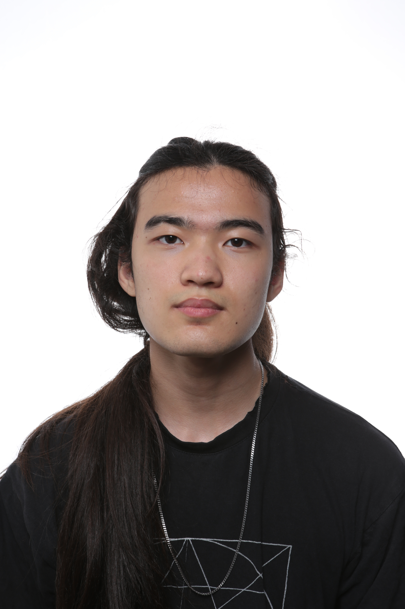
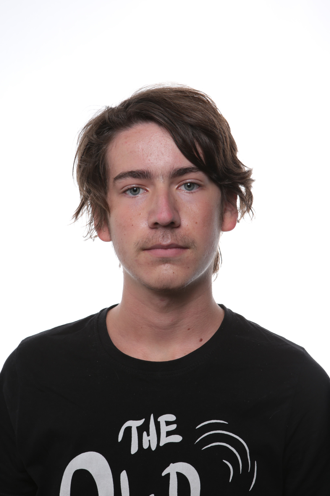
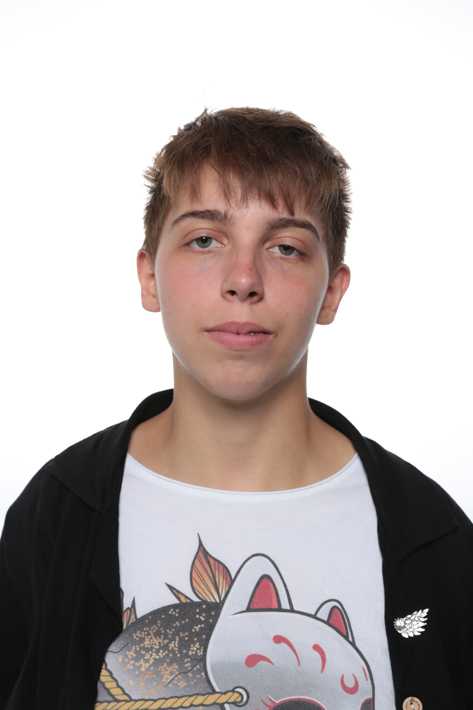

Description d'Arnaud
Après avoir commencé à programmer sous Unity en 6ème, je peux clairement affirmer que je veux devenir développeur de jeux-vidéos. J’ai des facilités pour comprendre les conceptions scientifiques (comme les mathématiques), et j’ai donc décidé de faire de l’informatique, en passant par une Terminale générale Spécialité Mathématiques et Sciences de l'Ingénieur (option mathématiques expertes). De plus, j’ai déjà participé à des “game jams” (concours de création de jeux-vidéos), et même si je n’ai jamais pu envoyer quelque projet que ce soit, je pense pouvoir aider mon groupe de projet S2 à s’organiser.

Description de Maxence
Féru d’informatique depuis plusieurs années déjà, lorsque en fin de 2nde la possibilité de prendre la spécialité NSI m’a été proposée je n’ai pas raté l’occasion, et c’est donc tout naturellement que je me suis retrouvé à l’EPITA. Ce projet de S2 nous permettant de promouvoir notre capacité de coordination et de travail en groupe, ainsi que notre créativité est, selon moi, une bonne occasion de se forger une bonne idée des ressources nécessaires afin de travailler dans l’univers du jeu vidéo, ou même de l’informatique en général, tout en accumulant les connaissances fondamentales de ces domaines. De plus, étant moi même un adepte de roguelike/roguelite en tout genres, c’est avec grande joie que j’appris que nous nous orienterons vers un jeu de ce type, cela me donnant l’occasion de développer un jeu du type que j’affectionne le plus. Dans ce projet, je me chargerais principalement du level design, ainsi que de déterminer le gameplay de notre jeu. Ayant déjà des antécédents avec le HTML et le CSS, je pourrais également apporter mon aide pour la conception du site internet si besoin.

Description de Sophie
Je joue aux jeux vidéo de tout type, peu importe, du moment que l'expérience est plaisante ! Au début, je jouais surtout aux jeux type pokémon ou zelda. Au fil du temps, mon répertoire s’est étoffé, des platformers 2 ou 3D aux RPG (Role Playing Game) en passant par les shoot them up et les MMO (Multiple Massive Online) en tout genre… En ce moment, je joue à Final Fantasy 14. J’adore ce jeu pour son histoire, ses personnages, la difficulté de certaines instances et le côté multijoueur. J’aime aussi le côté technique comme dans la licence Monster Hunter. En conclusion, plutôt qu’un genre de jeux vidéo préféré, j’aimerais un jeu selon des critères, tels que la concentration demandée pour y jouer, l’immersion dans le jeu, que ce soit par la concentration ou l’investissement émotionnel dans l’histoire du jeu, ou alors le côté technique et gratifiant des actions. Je n’ai jamais rien codé en matière de jeu vidéo, hormis le petit logiciel en AR dans les cours de NTS, donc je vais faire de mon mieux. Quand on part de zéro, on ne peut que s’améliorer !
